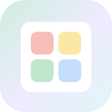

앱 목록을 불러오는 중이에요

홈 화면에 추가
앱처럼 바로 열려요
도움말
처음 설치할 때
- 앱 카드의 설치를 누르면 설치 파일(.apk)을 내려받아요.
- 다 받으면 화면 아래 열기를 누르거나, Chrome ⋮ → 다운로드에서 파일을 눌러요.
- 출처를 알 수 없는 앱 안내가 나오면 설정을 눌러 Chrome을 허용하고 돌아와요. 한 번만 하면 돼요.
- 설치를 누르면 끝이에요. 이미 깔려 있으면 업데이트로 나오고, 기록은 그대로 남아요.
- Play 프로텍트 안내가 나오면 세부정보를 열고 무시하고 설치(또는 그래도 설치)를 골라요.
홈 화면에 추가
- Chrome 오른쪽 위 ⋮를 눌러요.
- 홈 화면에 추가 또는 앱 설치를 눌러요.
- 홈 화면에 앱 가게 아이콘이 생겨요. 인터넷이 없을 때도 마지막으로 본 화면이 열려요.
- 아이폰은 Safari 아래 공유 버튼 → 홈 화면에 추가예요.
화면
테마